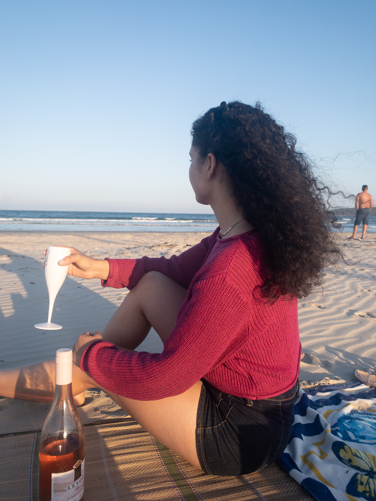
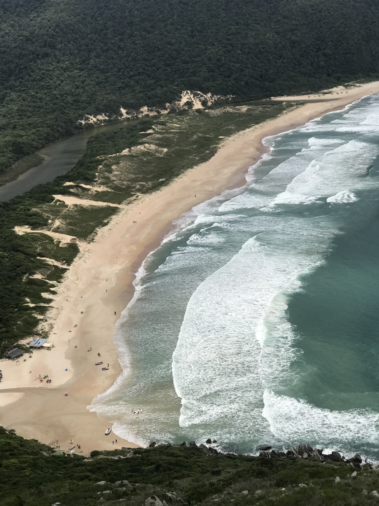
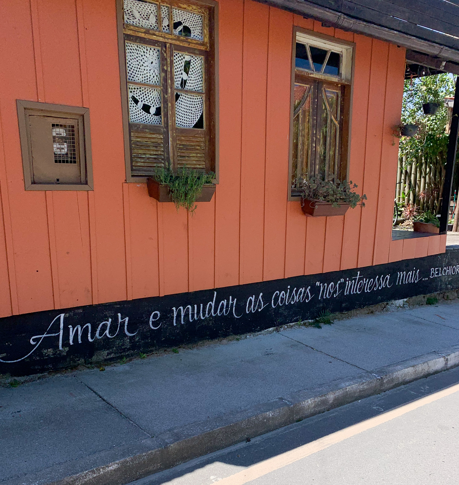
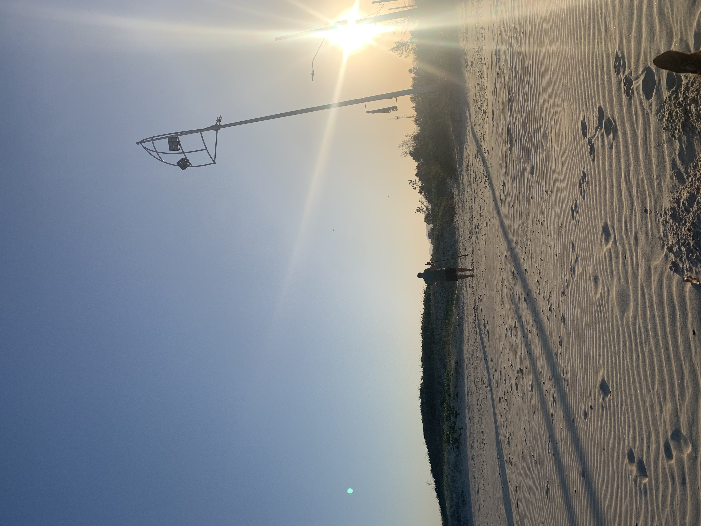

Palco da Memoria
Chile & Argentina
Viagem realizada entre outubro e novembro de 2018
Perrengues a destacar no Chile
- Acampei por 4 dias
- No primeiro dia, montei a barraca a noite, com um vento de 80km e na chuva
- O lugar que eu paguei a segunda coca cola mais cara da minha vida, 40 reais por 2l
Fiz o circuito W, em torres Del Paine


Argentina
Pontos a destacar na Argentina
- Umas 30 horas acordado em aeroporto, por causa de conexão
- O melhor gelato que comi na minha vida
- Povo muito acolhedor
Em Buenos aires, onde conheci uma livraria muito foda


Ushuaia, onde vi neve pela primeira vez

Em El calafate, no glaciar Perito Moreno, onde fiquei no mellhor hostel ever Folk hostel


Separados no nascimento

Trilha da Lagoinha do leste
Make sure the fortune, that you seek
Is the fortune that you need.
 
"Velho. É o que sou. Quero tudo e nada quero. Posso? Permites-me tal ousadia? Subir a mais alta montanha, conhecer o algures
e o nenhures; tocar o fundo de todos os mares e deitar-me com as estrelas e correr como o vento.“
Old Man and the Sea, Ernest Hemingway

Florianopolis
Mais importante que o lugar é a companhia


Por enquanto, isso é tudo